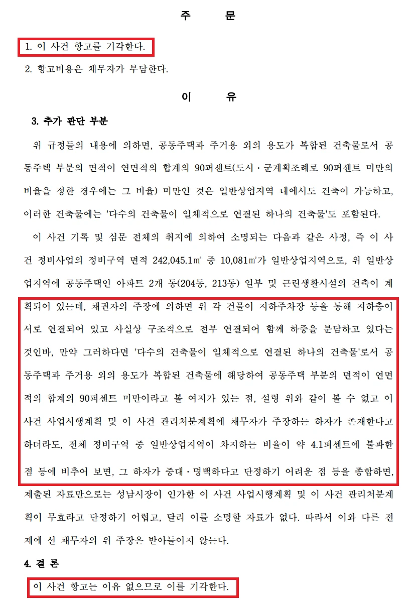

사건 개요
종교시설의 명도단행가처분 이의 신청을 방어하고 신속한 사업 진행을 이끌어낸 사례
1. 사건 개요
- 의뢰인: 주택재개발정비사업조합 (채권자)
- 상대방: 재개발구역 내 종교시설(교회) (채무자)
- 사건 배경: 의뢰인(조합)은 재개발구역 내에 위치한 교회 건물 및 부지를 인도받기 위해 제1심에서 부동산명도단행가처분 결정을 받았습니다. 그러나 상대방(교회)은 이에 불복하여 가처분결정의 취소와 기각을 구하는 항고를 제기하며 부동산 인도를 거부하였습니다.
2. 핵심 쟁점 및 법률사무소 준일의 조력
상대방은 명도를 지연시키기 위해 크게 두 가지의 복잡한 쟁점을 주장했습니다. 이에 대해 우리 측은 다음과 같은 날카로운 법리적 반박으로 대응했습니다.
- 제3자 거주를 이유로 한 인도 거부 주장 탄핵:상대방의 주장: 정비계획 수립 이전부터 제3자가 교회와 임대차계약을 맺고 전입신고를 마친 후 거주하고 있으므로 조합이 인도를 청구할 수 없다고 주장했습니다.우리의 반박: 설령 제3자가 거주 중이라 하더라도, 조합은 해당 제3자에게도 별도의 명도단행가처분을 구하여 목적을 달성할 수 있음을 지적했습니다. 즉, 제3자의 존재가 채무자인 교회를 상대로 한 명도 청구를 방해할 수 없다는 법리를 명확히 짚어 상대방의 주장을 무력화했습니다.
- 상대방의 주장: 정비계획 수립 이전부터 제3자가 교회와 임대차계약을 맺고 전입신고를 마친 후 거주하고 있으므로 조합이 인도를 청구할 수 없다고 주장했습니다.
- 우리의 반박: 설령 제3자가 거주 중이라 하더라도, 조합은 해당 제3자에게도 별도의 명도단행가처분을 구하여 목적을 달성할 수 있음을 지적했습니다. 즉, 제3자의 존재가 채무자인 교회를 상대로 한 명도 청구를 방해할 수 없다는 법리를 명확히 짚어 상대방의 주장을 무력화했습니다.
- 사업시행계획 및 관리처분계획 무효 주장에 대한 적극적 방어:상대방의 주장: 일반상업지역 내에 아파트(공동주택)를 건설하도록 한 사업시행계획은 국토계획법을 위반한 것이며, 이에 터 잡은 관리처분계획도 무효이므로 조합의 피보전권리가 인정되지 않는다고 주장했습니다.우리의 반박: 건축물들이 지하주차장 등을 통해 사실상 구조적으로 전부 연결되어 하중을 함께 분담하는 '일체적으로 연결된 하나의 건축물'에 해당함을 적극적으로 소명했습니다. 이를 통해 주거용 외의 용도가 복합되어 공동주택 부분 면적이 90% 미만인 예외 규정에 해당할 여지가 있음을 입증했습니다. 또한, 전체 정비구역 중 해당 일반상업지역의 비율이 약 4.1%에 불과하여, 설령 하자가 존재하더라도 사업 전체를 무효로 돌릴 만큼 중대하고 명백한 하자가 아니라는 점을 강력히 주장했습니다.
- 상대방의 주장: 일반상업지역 내에 아파트(공동주택)를 건설하도록 한 사업시행계획은 국토계획법을 위반한 것이며, 이에 터 잡은 관리처분계획도 무효이므로 조합의 피보전권리가 인정되지 않는다고 주장했습니다.
- 우리의 반박: 건축물들이 지하주차장 등을 통해 사실상 구조적으로 전부 연결되어 하중을 함께 분담하는 '일체적으로 연결된 하나의 건축물'에 해당함을 적극적으로 소명했습니다. 이를 통해 주거용 외의 용도가 복합되어 공동주택 부분 면적이 90% 미만인 예외 규정에 해당할 여지가 있음을 입증했습니다. 또한, 전체 정비구역 중 해당 일반상업지역의 비율이 약 4.1%에 불과하여, 설령 하자가 존재하더라도 사업 전체를 무효로 돌릴 만큼 중대하고 명백한 하자가 아니라는 점을 강력히 주장했습니다.
3. 결과 및 의의
- 결과: 수원고등법원은 상대방(교회)의 항고를 이유 없다고 판단하여 최종 기각하였고, 항고비용 역시 모두 채무자가 부담하도록 결정했습니다.
- 의의: 재개발 사업에서 가장 큰 난관 중 하나인 대형 종교시설과의 명도 분쟁에서 완벽하게 승소한 사례입니다. 특히, 국토계획법 및 건축법상의 복잡한 예외 조항을 꼼꼼하게 파고들어 상대방의 무효 주장을 방어해 냈습니다. 이로써 의뢰인은 불필요한 사업 지연을 막고 재개발 절차를 신속하고 원활하게 이어갈 수 있게 되었습니다.
※ 구체적인 사건은 사실관계에 따라 달라질 수 있습니다.